La Semana Santa es la conmemoración anual cristiana de la Pasión, Muerte y Resurrección de Jesús de Nazaret. Por eso, es un período de intensa actividad litorgica dentro de las diversas confesiones cristianas.
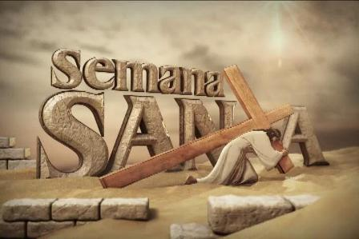Da comienzo el Domingo de Ramos y finaliza el Domingo de Resurrección,1 aunque su celebración suele iniciarse en varios lugares el viernes anterior (Viernes de Dolores) y se considera parte de la misma el Domingo de Resurrección.
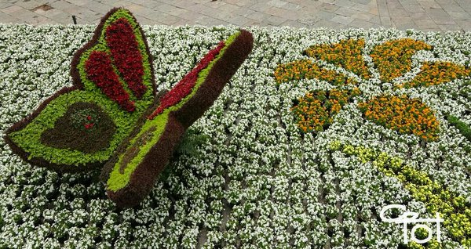La Semana Santa va precedida por la Cuaresma, que finaliza en la Semana de Pasión donde se celebra la eucarista en el Jueves Santo, se conmemora la Crucifixión de Jesús el Viernes Santo y la Resurrección en la Vigilia Pascual durante la noche del Sábado Santo al Domingo de Resurrección.
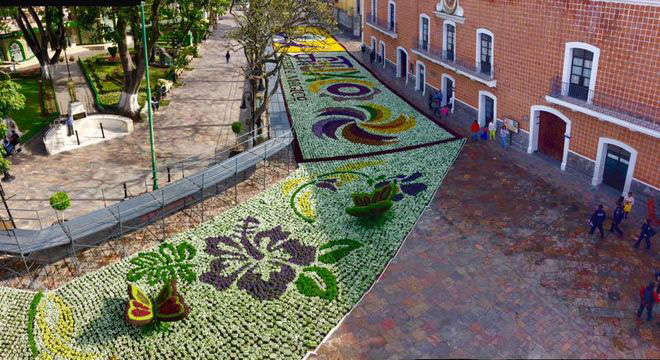Durante la Semana Santa tienen lugar numerosas muestras de religiosidad popular a lo largo de todo el mundo, destacando las procesiones y las representaciones de la Pasión.
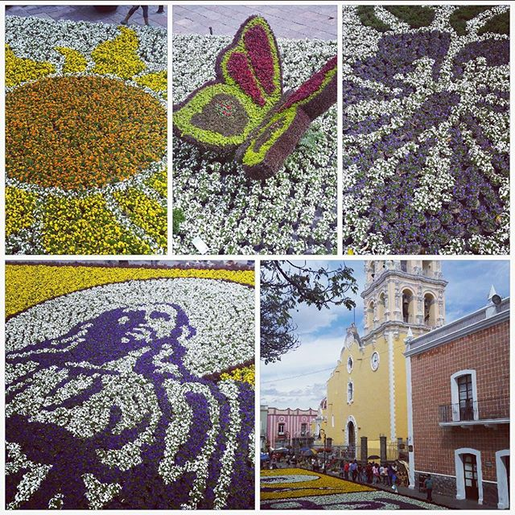La fecha de la celebración es variable (entre marzo y abril según el año) ya que depende del calendario lunar. Para saber cuando es semana santa, tenemos que tener a mano un calendario lunar, ya que la primera luna llena después de la entrada de la primavera va a determinar las fechas de la semana santa.
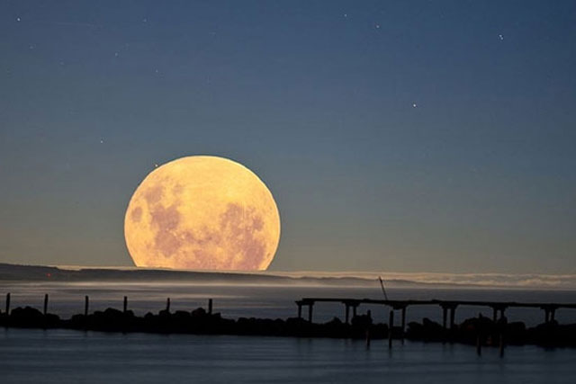El primer Domingo después de la primera luna llena es Domingo de Resurección.A partir de ese día, podemos calcular
con exactitud cuando es Semana Santa, ya que el primer día festivo es exactamente el domingo anterior, el Domingo
de Ramos.
El Domingo de Ramos Semana Santa se dará siempre entre el 22 de marzo y el 25 de abril. A partir de aquí, sólo hay
que tirar para atrós en el calendario.

Jueves Santo es la última cena de Jesús de Nazaret con sus discípulos
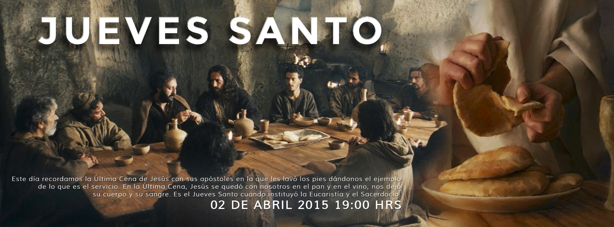Viernes santo se conmemora la muerte de Jesús de Nazaret

Sabado santo se lleva a cabo una vigilia pascual, se acostumbra bendecir el agua y encender las velas en señal de la Resurrección de Jesús.
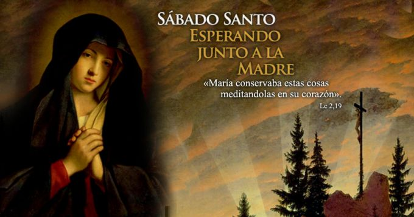Domingo santo se conmemora la resurrección de Jesucristo al tercer día después de su crucifixión y, su primera aparición a los disípulos.
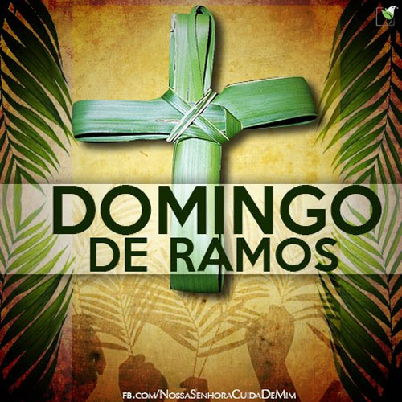En algunas partes de atlixco distintas se hacen pequeños altares para reprecentar la procesion o las distintas paradas que jesús en este caso recorrio a traves de estaciones de la I a la XV.
En estas partes anteriormente menconadas acostumbran entre los vesinos apolllarse para poder terminar a tiempo esta misma alfombra o manta en el piso y una vez terminado esto esperan a los acompañantes de la procesion, y almismo tiempo a las imagenes en representación.
Es la meditacion de los momentos y sufrimientos vividos por jesús desde que fue hecho prisionero hasta su muerte en la cruz y posterior su resurección.
Se ocupa aserrin, pintura para poder pintar este mismo, una tina para poder mezclar el color y poca agua solo lo sufisiente.
Las alfombras para poder colocarlas se necesita primero un dibujo estos son hechos por la imaginación de la gente, y estos pueden ser flores, arcoiris, soles, corazones etc.
Período de cuarenta y seis días, desde el miércoles de ceniza hasta la víspera del domingo de Resurrección, en el cual algunas iglesias cristianas preceptúan ciertos días de ayuno y penitencia en memoria de los cuarenta que ayunó Jesús en el desierto.
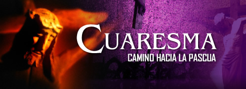La Cuaresma es el tiempo litórgico de conversión, que marca la Iglesia para prepararnos a la gran fiesta de la Pascua. Es tiempo para arrepentirnos de nuestros pecados y de cambiar algo de nosotros para ser mejores y poder vivir más cerca de Cristo.
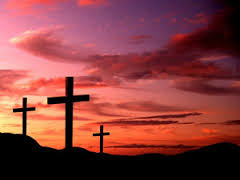Que no creen en Jesús como su Salvador, celebran el matza, una cena que consiste en hierbas con sabor amargo y pan sin levadura (ócimo) en forma de galleta. El sabor amargo recuerda la esclavitud que vivió el pueblo de Israel ante los egipcios; y el pan sin levadura, según las escrituras bíblicas, simboliza la humildad de esta comunidad.
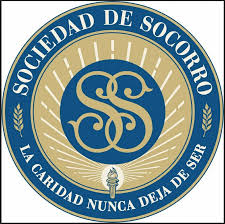Los miembros de esta religión celebran la Cena del Señor con pan sin levadura y vino en sus congregaciones.
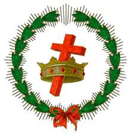Ellos no conmemoran la muerte de Jesús sino su resurrección. En estos días hacen reuniones para recordar la noche de la entrega de Cristo y para conmemorar la resurrección.
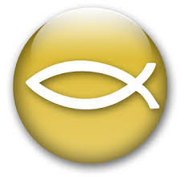En el sentir de los adventistas, la Semana Santa es la conmemoración de la pasión de Cristo; sin embargo, los seis d�as no los trabajan normalmente, además, no tienen que ingerir alimentos que provengan de animales.
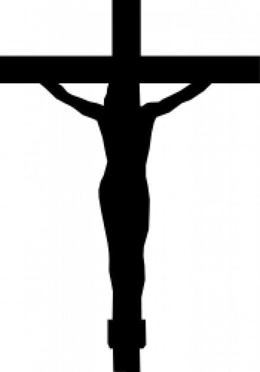